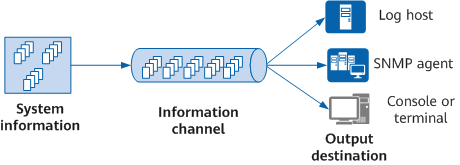

IM Fundamentals
IM classifies information based on severity levels and sends it to corresponding destinations through various information channels. As shown in Figure 1, IM's working principles are as follows:
- IM receives information generated by each module during device operation, including logs, traps, and debugging messages, and stores this information in the corresponding log, trap, and debugging queues.
- IM outputs different types and severities of information to various information channels, such as the console, monitor, log host, and trap buffer, based on user settings.
IM outputs information to the console, log host, or other destination based on the association between information channels and destinations.
Figure 1 IM working principles